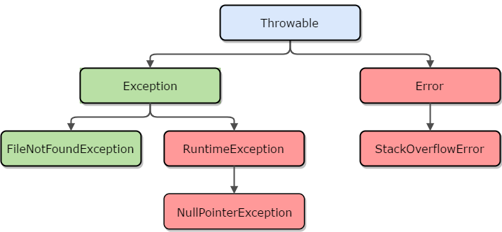

Java
Маличенко Сергей
Введение
Java – объектно-ориентированный язык программирования, разработанный компанией Sun Microsystems (в последующем приобретённой компанией Oracle).Как используется Java у нас:
- Java Enterprise Edition
- Android
Что необходимо для старта
Hello, world!
package com.noveogroup.hello;
public class HelloWorldClass {
public static void main(String[] args) {
System.out.println("Hello world");
}
}
Методы
public int getValue(ind id, String name) {
...
}
Модификаторы доступа:
- public
- protected
- private
- default
Типы данных
Примитивные
- byte
- short
- int
- long
- float
- double
- boolean
- char
Ссылочные
- Массивы (int[] array, String[] array, ...)
- Классы и интерфейсы (String, Date, Calendar, ...)
- Перечисления (Enum)
Типы данных
- byte → Byte
- short → Short
- int → Integer
- long → Long
- float → Float
- double → Double
- boolean → Boolean
- char → Character
Autoboxing
Inboxing
Метод:
public void inboxing(Integer value) {
System.out.println(value);
}
Вызов:
boxing.inboxing(10);
Unboxing
Метод:
public void unboxing(int value) {
System.out.println(value);
}
Вызов:
boxing.unboxing(new Integer(25));
Классы. Наследование
public class ChildClass extends ParentClass {
private String name = "example";
public String getName() {
return name;
}
}
Классы. Наследование. final.
public final class MyClass {
public final void getValue(final String val) {
final int a = 10;
}
}
final класс – нельзя наследоваться
final метод – нельзя переопределять
final переменная – может быть инициализирована только один раз
Классы. Наследование. Object
package java.lang;
public class Object {
public String toString();
public boolean equals(Object obj);
public int hashCode();
protected Object clone();
protected void finalize();
public final Class getClass();
public final void notify();
public final void notifyAll();
public final void wait(long millis);
}
Классы. Наследование. Abstract.
public final abstract class MyClass() {
private public abstract int getValue();
}
Классы. Внутренние классы.
public class OuterClass {
private int value = 0;
class InnerClass {
public void incrementValue() {
value++;
}
}
}
Классы. Анонимные классы.
public class ClassA {
public void printString() {
System.out.println("String");
}
}
public class ClassB {
public static void main(String[] args) {
final ClassA classA = new ClassA() {
@Override
public void printString() {
System.out.println("other string");
}
};
classA.printString(); // will print "other string"
}
}
Интерфейсы
public interface MyInterface {
int NAME_LENGTH = 20;
void getName();
void getEmail();
}
Интерфейсы. Реализация
public interface MyInterface1 {
void methodFromMyInterface1();
}
public interface MyInterface2 {
void methodFromMyInterface2();
}
public class MyClass implements MyInterface1, MyInterface2 {
@Override
public void methodFromMyInterface1() {
}
@Override
public void methodFromMyInterface2() {
}
}
Интерфейсы. Наследование
public interface MyInterface1 {
void method1();
}
public interface MyInterface2 {
void method2();
}
public interface MyInterface3 extends MyInterface1,
MyInterface2 {
void method3();
}
public class MyClass implements MyInterface3 {
@Override
public void method1() {
}
@Override
public void method2() {
}
@Override
public void method3() {
}
}
Enum
public enum UserRole {
ADMIN, USER, GUEST
}
Использование:
UserRole role = UserRole.ADMIN;
Enum
public enum UserRole {
ADMIN("adm"), USER("usr"), GUEST("gst");
private String shortName;
UserRole(final String shortName) {
this.shortName = shortName;
}
public String getShortName() {
return shortName;
}
}
Использование:
UserRole role = UserRole.ADMIN;
role.getShortName(); // "adm"
Аннотации
Аннотации – специальная форма синтаксических метаданных, которая может быть добавлена в исходный код.
Аннотации могут применяться к:
- Классам
- Методам
- Полям
- Конструкторам
- Другим аннотациям
Примеры:
- @Override
- @SuppressWarnings
- @Deprecated
Аннотации. Применение
public interface MyInterface {
void myMethod();
}
public class MyClass implements MyInterface {
@Override
public void myMethod() {
}
}
@SuppressWarnings("all")
public class MyClass {
public static void main(String[] args) {
MyClass myClass = new MyClass();
myClass.myMethod(new Integer(23));
if (true) {
}
}
private void myMethod(int value) {
}
}
Аннотации. Создание
@interface Security {
String id();
String userName() default "Unknown";
int count() default 1;
}
Использование:
@Security(id = "uniqID", count = 10)
class MyClass {
}
Аннотации. Мета-аннотации. @Documented
@interface Secret {
...
}
@Documented
@interface @NotSecret {
...
}
@Secret
@NotSecret
class MyClass {
}
Аннотации. Мета-аннотации. @Inherited
@interface JustForMe {
...
}
@Inherited
@interface ForEveryone {
...
}
@ForEveryone
@JustForMe
class SuperClass {
...
}
// неявно аннотирован @ForEveryone, но не @JustForMe
public class SubClass extends SuperClass {
...
}
Аннотации. Мета-аннотации. @Retention
@Retention(RetentionPolicy.SOURCE)
@interface Security {
...
}
Варианты:
- RetentionPolicy.SOURCE
- RetentionPolicy.CLASS
- RetentionPolicy.RUNTIME
Аннотации. Мета-аннотации. @Target
@Target(ElementType.TYPE)
@interface Security {
...
}
Варианты:
- ElementType.TYPE
- ElementType.FIELD
- ElementType.METHOD
- ElementType.PARAMETER
- ElementType.CONSTRUCTOR
- ElementType.LOCAL_VARIABLE
- ElementType.ANNOTATION_TYPE
- ElementType.PACKAGE
- ElementType.TYPE_PARAMETER
- ElementType.TYPE_USE
Аннотации. Мета-аннотации. @Repeatable
@Repeatable(Securities.class)
@interface Security {
String id();
String userName() default "Unknown";
int count() default 1;
}
@interface Securities {
Security[] value();
}
@Securities(value = {
@Security(id = "id1", count = 2),
@Security(id = "id2", userName = "admin")
})
class MyClass {
}
Аннотации. Мета-аннотации. Итого
@Documented
@Inherited
@Target(ElementType.TYPE)
@Retention(RetentionPolicy.CLASS)
@Repeatable(Securities.class)
@interface Security {
String id();
String userName() default "Unknown";
int count() default 1;
}
Исключения
Исключение (Exception) – событие, нарушающее нормальное выполнение программы. В Java любое исключение – объект.Примеры:
- FileNotFoundException
- IllegalArgumentException
- NullPointerException
Исключения. Иерархия

Исключения. try-catch-finally
public void myMethod() {
try {
FileReader fileReader = new FileReader(...);
} catch (FileNotFoundException e) {
// handle exception
} finally {
// do something
}
}
Multicatch
...
} catch (FirstException | SecondException e) {
// handle any of the two exceptions
}
Исключения. Catch or throw
public void myMethod() {
try {
FileReader fileReader = new FileReader(...);
} catch (FileNotFoundException e) {
// handle exception
}
}
Либо
public void myMethod() throws FileNotFoundException {
FileReader fileReader = new FileReader(...);
}
Исключения. Создание собственного исключения
public class MyException extends Exception {
}
public class MyClass {
public void myMethod() throws MyException {
...
throw new MyException();
}
}
Java IO
Поток (stream) – это некоторая абстракция, представляющая последовательность данных.- Input stream – для чтения данных
- Output stream – для записи данных
Типы потоков:
- Байтовые потоки
- InputStream
- OutputStream
- Символьные потоки
- Reader
- Writer
Java IO. Пример чтения/записи
public void processFile() {
FileInputStream in = null;
FileOutputStream out = null;
try {
String fileName = "fileName.txt";
in = new FileInputStream(fileName);
out = new FileOutputStream(fileName);
int byteOfData;
while ((byteOfData = in.read()) != 1) {
out.write(byteOfData);
}
} catch (IOException e) {
// handle exception
} finally {
try {
if (in != null) {
in.close();
}
if (out != null) {
out.close();
}
} catch (IOException e) {
// handle exception
}
}
}
try-with-resources
public void processFile() {
String fileName = "fileName.txt";
try (FileInputStream in = new FileInputStream(fileName);
FileOutputStream out = new FileOutputStream(fileName)) {
int byteOfData;
while ((byteOfData = in.read()) != 1) {
out.write(byteOfData);
}
} catch (IOException e) {
// handle exception
}
}
Java IO. Буферизация
Байтовые потоки
FileInputStream fis = new FileInputStream(...);
FileOutputStream fos = new FileOutputStream(...);
BufferedInputStream bis = new BufferedInputStream(fis);
BufferedOutputStream bos = new BufferedOutputStream(fos);
Символьные потоки
FileReader fr = new FileReader(...);
FileWriter fw = new FileWriter(...);
BufferedReader br = new BufferedReader(fr);
BufferedWriter bw = new BufferedWriter(fw);
Java IO
Data streams:
- DataInputStream
- readByte
- readChar
- readInt
- ...
- DataOutputStream
- writeByte
- writeChar
- ...
Object streams:
- ObjectInputStream
- readObject
- ...
- ObjectOutputStream
- writeObject
- ...
Java IO. Сериализация
public class MyClass implements Serializable {
private int age;
private String login;
private transient String password;
}
public class MyClass implements Serializable {
private void writeObject(ObjectOutputStream stream) {
stream.writeObject(this);
}
private MyClass readObject(ObjectInputStream stream) {
return (MyClass) stream.readObject();
}
}
Generics
Обобщения (Generics) – механизм, позволяющий параметризировать классы, интерфейсы и отдельные методы с целью улучшить возможности по проверке типов на стадии компиляции.Пример:
public class Box<T> {
private T value;
public T getValue() {
return value;
}
public void setValue(T value) {
this.value = value;
}
}
Использование:
Box<String> stringBox = new Box<String>();
stringBox.setValue("String value");
Box<Integer> intBox = new Box<Integer>();
intBox.setValue(123);
intBox.setValue("String"); // error
Generics. Ограничения типов
public class Box<T extends Number> {
private T value;
public T getValue() {
return value;
}
public void setValue(T value) {
this.value = value;
}
}
Использование:
Box<Integer> intBox = new Box<Integer>(); // ok
Box<String> stringBox = new Box<String>(); // error
Generics. Параметризированные методы
Пример:
public class MyClass {
public <T extends Number> void calc(T value) {
...
}
}
Использование:
MyClass myClass = new MyClass();
myClass.calc(25);
Generics. Наследование

Пример:
public void consumeBox(Box<Number> numberBox) {
// do something
}
Использование:
consumeBox(new Box<Number>()); // ok
consumeBox(new Box<Integer>()); // error
Generics. Wildcards
Пример:
public void consumeBox(Box<?> anyBox) {
// do something
}
Использование:
consumeBox(new Box<Object>()); // ok
consumeBox(new Box<Integer>()); // ok
Generics. Wildcards. Ограничения
Пример extends:
public void consumeBox(Box<? extends Number> box) {
// можно использовать методы Number
box.getValue().intValue();
}
Использование:
// ок, "Integer" – наследник "Number"
consumeBox(new Box<Integer>());
// ок, "Double" – наследник "Number"
consumeBox(new Box<Double>());
// тоже ок
consumeBox(new Box<Number>());
// ошибка
consumeBox(new Box<Object>());
Пример super:
public void consumeBox(Box<? super Integer> box) {
// do something
...
}
Использование:
// ок, "Number" – родитель Integer
consumeBox(new Box<Number>());
// ок, "Object" – родитель Integer
consumeBox(new Box<Object>());
// тоже ок
consumeBox(new Box<Integer>());
// ошибка
consumeBox(new Box<Double>());
Коллекции. Списки

Список (List) –упорядоченная последовательность, которая может содержать повторы. Дополняет интерфейс Collection
операциями, характерными для линейной структуры (поиск индекса, обращение к элементу по индексу, получение подсписка).
Реализации списков:
- LinkedList<E> – на основе двусвязного списка, нужно применять, когда есть много операций вставки / удаления в середину списка.
- ArrayList<E> – на основе массива, эффективен при частом обращении к элементам с произвольным списком. Используется в 90% случаях.
Коллекции. Множества и очереди
Множество (Set) – набор неповторяющихся элементов.
- HashSet<E> – множество на основе hash-таблицы.
- LinkedHashSet<E> – множество на основе hash-таблицы и двусвязного списка.
- TreeSet<E> – множество на основе красно-черного дерева (использует Comparable или Comparator).
Очередь (Queue) – структура данных, работающая по принципу «первый пришёл — первый вышел» (FIFO, First In — First Out).
- Queue<E> – интерфейс однонаправленной очереди.
- Deque<E> – интерфейс двунаправленной очереди. Является наследником Queue<E>. LinkedList<E> – одна из реализаций Deque<E>.
Характерные операции:
- offer
- poll
- peek
Коллекции. Словари
Словарь (Map) – множество пар ключ-значение.- HashMap<K,V> – основана на Hash-таблице, не может содержать null в качестве ключей или значений. Используется в 90% случаях.
- TreeMap<K,V> – основана на красно-черном дереве. Log(n) трудоемкость.
- Hashtable<K,V> – устаревшая реализация, использовать не надо.
Iterator
Iterator – объект, который позволяет последовательно проходить элементы коллекции.
List<String> list = new ArrayList<>();
list.add("first");
list.add("second");
Iterator<String> iterator = list.iterator();
while (iterator.hasNext()) {
String next = iterator.next();
System.out.println(next);
}
Collections
Collections – класс, содержащий набор вспомогательных статических методов.
List<Integer> list = new ArrayList<>();
// создаем список 3, 2, 1
list.add(3);
list.add(2);
list.add(1);
Collections.sort(list); // 1, 2, 3
Collections.swap(list, 1, 2); // 1, 3, 2
Collections.reverse(list); // 2, 3, 1
Collections.fill(list, 0); // 0, 0, 0
Потоки. Как запустить код в другом потоке
С помощью интерфейса Runnable:
public class MyRunnable implements Runnable {
@Override
public void run() {
System.out.println("Hello Thread");
}
}
Использование:
Thread thread = new Thread(new MyRunnable());
thread.start(); // напечатает "Hello Thread" в новом потоке
С помощью класса Thread:
public class MyThread extends Thread {
@Override
public void run() {
System.out.println("Hello Thread");
}
}
Использование:
Thread thread = new MyThread();
thread.start(); // напечатает "Hello Thread" в новом потоке
Потоки. Sleep & interrupt
public class MyRunnable implements Runnable {
@Override
public void run() {
try {
for (int i = 0; i < 10; i++) {
Thread.sleep(2000); // 2 секунды
System.out.println("Hello Thread");
}
} catch (InterruptedException e) {
System.out.println("Interrupted");
}
}
}
Использование:
Thread thread = new Thread(new MyRunnable());
thread.start();
thread.interrupt();
// Поток напечатает "Interrupted" и завершит работу
Потоки
public class MyRunnable implements Runnable {
@Override
public void run() {
System.out.println("Hello "
+ Thread.currentThread().getName());
System.out.println("Hello "
+ Thread.currentThread().getName());
}
}
Выполнение двух потоков:
Thread thread = new Thread(new MyRunnable());
thread.start();
Thread otherThread = new Thread(new MyRunnable());
otherThread.start();
Возможные варианты вывода в консоль:
И так далее ...
// Hello Thread-1
// Hello Thread-1
// Hello Thread-0
// Hello Thread-0
// Hello Thread-0
// Hello Thread-1
// Hello Thread-0
// Hello Thread-1
// Hello Thread-0
// Hello Thread-1
// Hello Thread-1
// Hello Thread-0
Потоки. Join
public class MyRunnable implements Runnable {
@Override
public void run() {
System.out.println("Hello "
+ Thread.currentThread().getName());
System.out.println("Hello "
+ Thread.currentThread().getName());
}
}
Выполнение двух потоков с join:
Thread thread = new Thread(new MyRunnable());
thread.start();
try {
thread.join(); // ждет окончания работы thread
} catch (InterruptedException e) {
System.out.println("Thread interrupted");
}
Thread otherThread = new Thread(new MyRunnable());
otherThread.start();
Вывод в консоль:
// Hello Thread-0
// Hello Thread-0
// Hello Thread-1
// Hello Thread-1
Потоки. Синхронизация
public class Counter {
private int counter = 0;
public void decrement() {
counter--;
printCounter();
}
public void increment() {
counter++;
printCounter();
}
private void printCounter() {
String string = String.format("%d %s", counter,
Thread.currentThread().getName());
System.out.println(string);
}
}
public class MyRunnable implements Runnable {
private Counter counter;
public MyRunnable(Counter counter) {
this.counter = counter;
}
@Override
public void run() {
counter.increment();
counter.decrement();
}
}
Counter counter = new Counter();
Thread thread = new Thread(new MyRunnable(counter));
thread.start();
Thread otherThread = new Thread(new MyRunnable(counter));
otherThread.start();
Варианты вывода в консоль:
// 1 Thread-0
// 2 Thread-1
// 1 Thread-0
// 0 Thread-1
// 1 Thread-1
// 1 Thread-0
// 0 Thread-0
// -1 Thread-1
// 1 Thread-0
// 2 Thread-1
// 1 Thread-0
// 1 Thread-1
Потоки. Синхронизация
public class Counter {
private int counter = 0;
public synchronized void decrement() {
counter--;
printCounter();
}
public void increment() {
synchronized (this) {
counter++;
printCounter();
}
}
private void printCounter() {
String string = String.format("%d %s", counter,
Thread.currentThread().getName());
System.out.println(string);
}
}
public class MyRunnable implements Runnable {
private Counter counter;
public MyRunnable(Counter counter) {
this.counter = counter;
}
@Override
public void run() {
counter.increment();
counter.decrement();
}
}
Counter counter = new Counter();
Thread thread = new Thread(new MyRunnable(counter));
thread.start();
Thread otherThread = new Thread(new MyRunnable(counter));
otherThread.start();
Варианты вывода в консоль:
// 1 Thread-0
// 2 Thread-1
// 1 Thread-1
// 0 Thread-0
// 1 Thread-1
// 2 Thread-0
// 1 Thread-0
// 0 Thread-1
// 1 Thread-1
// 0 Thread-1
// 1 Thread-0
// 0 Thread-0
Потоки. wait, notify, notifyAll
public class Box {
private boolean empty = true;
private String message = "message";
public synchronized String get() {
// ждем когда можно будет отправить сообщение
while (empty) {
try {
wait();
} catch (InterruptedException e) {}
}
// изменяем статус
empty = true;
// уведомлляем об изменении статуса
notifyAll();
// возвращаем сообщение
return message;
}
}
public class Box {
private boolean empty = true;
private String message = "message";
public synchronized String get() {
...
}
public synchronized void put(String message) {
// ждем когда можно будет записать сообщение
while (!empty) {
try {
wait();
} catch (InterruptedException e) {}
}
// изменяем статус
empty = false;
// записываем сообщение
this.message = message;
// уведомляем об изменении статуса
notifyAll();
}
}
Потоки. java.util.concurrent
- Lock objects
- Executors
- Concurrent collections
- Atomic variables
Материалы
- The Java Tutorials by Oracle
- Java Language Specifications
- "Just Java" by Peter van der Linden
- "Thinking in Java" by Bruce Eckel